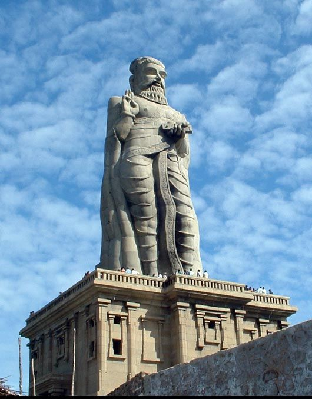

Located at the southern most tip of the Indian Peninsula where the Arabian Sea, the Indian Ocean and the Bay of Bengal meet, is Kanyakumari, the place famous for its spectacular sunrises and sunsets. Here out in the sea, about 400m from the shore, on the minor rock adjoining the Vivekananda rock memorial lies a Statue of Saint Thiruvalluvar, the author who gave us quintessential words of wisdom through his philosophical work 'Thirukkural', a treatise in Tamil on the Indian way of life. The statue, standing amid the dancing blue waves, creates a lasting impression as it rises high over the rock.
The foundation stone for the statue was laid in 1979 by the former Prime Minister, Morarji Desai. But the installation was finalised and the actual work of sculpting the statue began only in 1990 when Chief Minister Mr. Karunanidhi allocated funds for its erection in the 1990-91 budget. Five hundred sculptors were engaged for this work under the able guidance of Dr. Ganapathi Sthapati and the work was completed in 1999. The statue was inaugurated on 1st January 2000 by Dr. M.Karunanidhi, the Chief Minister of Tamil Nadu. The rocks for the sculpture came from Sirudhamoor, Pattumalikuppam and Ambhasamudram Hills.
The monument, installed at a cost of Rs. 6.14 crores is 133 feet high including the pedestal, signifying the 133 chapters of the 'Thirukkural'. The pedestal is 38 ft high representing the 38 chapters in the first part of the Kural (the Book of Aram (virtue) and the 95 ft statue represents the total chapters in the second and third parts of the Kural, Wealth and Love. Thus the statue symbolises the themes of wealth and love based on virtue. The right hand of Thiruvalluvar with three fingers pointing skywards, also signifies the three cantos of 'Thirukkural' - 'Aram, Porul and Inbam.'
The pedestal is surrounded by an artistic mandapam known as 'alankara mandapam'. Surrounding this mandapam stand statues of ten elephants signifying 8 directions with earth and space down. 140 steps are constructed inside the mandapam to enable the visitors to climb upto the foot of the statue. There were plans to inscribe select couplets from 'Thirukkural' on the outer periphery of the pedestal.
